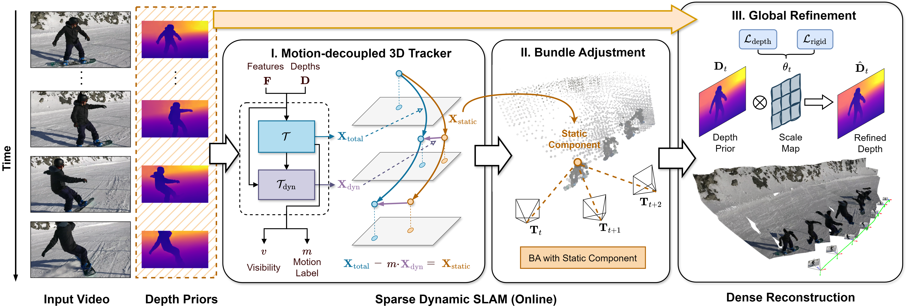

Traditional SLAM systems, which rely on bundle adjustment, often struggle with highly dynamic scenes commonly found in casual videos. Such videos entangle the motion of dynamic elements, undermining the assumption of static environments required by traditional systems. Existing techniques either filter out dynamic elements or model their motion independently. However, the former often results in incomplete reconstructions, whereas the latter can lead to inconsistent motion estimates. This work proposes a novel approach that leverages a 3D point tracker to decouple the static and dynamic motion, effectively separating the camera-induced motion from the motion of dynamic objects. Bundle adjustment can therefore operate reliably considering only the camera-induced component of the observed motion. We further ensure depth consistency across video frames with lightweight post-processing based on scale maps. Our framework combines the core of traditional SLAM, bundle adjustment, with a robust learning-based 3D tracker front-end. By integrating motion decomposition, bundle adjustment, and depth refinement into a unified framework, our method accurately tracks the camera motion and produces temporally coherent and scale-consistent dense reconstructions, accommodating both static and dynamic elements. Our experiments on challenging datasets reveal significant improvements in camera pose estimation and 3D reconstruction accuracy.

BA-Track Pipeline. Given a temporal window, we compute image features and noisy depth maps. Our 3D tracker estimates local 3D tracks, visibility, dynamic labels, and decouples the static (camera-induced) motion of each query point. Operating on the static motion components, bundle adjustment recovers the camera poses and global tracks. The final refinement stage aligns the monocular depth priors with sparse BA estimates to ensure a temporally consistent and dense reconstruction.
Dynamic scene reconstruction results on DAVIS, Shibuya and Aria Everyday Activities datasets. Trained on the synthetic Kubric dataset only, our model can generalize to challenging real-world dynamic scenes and egocentric video.
Motion decomposition: static point (green), static flow of dynamic point (red), and total flow of dynamic point (yellow).
Camera trajectory: ground truth (red), BA-Track (green).